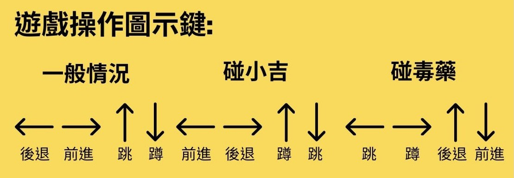

2D橫向捲軸，單機，角色扮演。
2D橫向捲軸，單機，角色扮演。
在討論的過程中，我們以在生活中共同有的生活經驗作為發想，結合想傳達自身認為重要信念，藉由以上兩項，經由商討後，此款遊戲才出現在大家面前，而以下是兩項做為動機發想：
（一）現今許多人都有近視，沒有眼鏡看不到路會對生活帶來許多不便。->以眼鏡作為遊戲主軸發展
（二）在累了一天之後，能夠回到家休息是一件很棒的事。->以回家為遊戲情境和目標
玩家需利用方向鍵讓主角榮榮往右移動回家，途中會設置靜態障礙物、阻礙物-路人、蜜蜂、香蕉使他眼鏡掉落，特殊功能障礙-吉娃娃、毒藥會擾亂操作鍵，需吃到解藥才能解除，在遊戲進行中碰到腳踏車能夠快速的移動，但碰到香蕉及消失，而眼鏡掉落的次數會使他血量減少，需戴上眼鏡才能停止血量下降並恢復成正常移動的姿勢繼續移動，通關的方式是在不失去所有血量的前提下回到家裡。
放學後回家的路上總是重重阻礙，主角榮榮能否保護好眼鏡且順利回到家呢？
主角榮榮需從起點往右移動，掉眼鏡的次數會影響血量減少，需要躲過任何會使眼鏡掉下來的阻礙、機制，在血量耗盡前到家-終點及通關。
在回家的路上，玩家要想辦法操控榮榮避免眼鏡掉落，並讓榮榮安全回家。

主畫面（操作導覽）→選擇遊戲難度→遊玩→顯示遊戲成績→再玩一次/回第一頁
此款遊戲以難度為區分，玩家可在遊玩之前選擇關卡難易度，隨著關卡難易度不同，遊戲內阻礙配置也有不同配置，玩家共同目的，在血量值耗盡前，操控主角榮榮安全的戴著眼鏡回家。